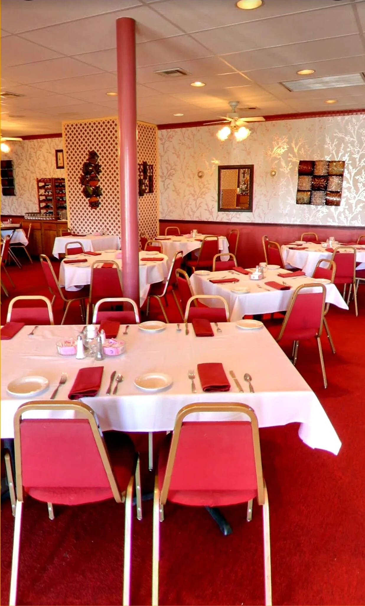

Our Story
Read Our Full Story →
Serving San Antonio Since 1985
For over 40 years, Ernesto's has been a San Antonio treasure — a place where French culinary artistry meets the warmth and soul of Mexican cuisine. Every sauce, every dressing, every piece of bread is made from scratch, every single day.
What began as one chef's dream to bring gourmet technique to the Mexican dishes he grew up loving has become a family legacy — three generations strong and still cooking with the same passion.
From Scratch Daily
French-Trained
Family Legacy